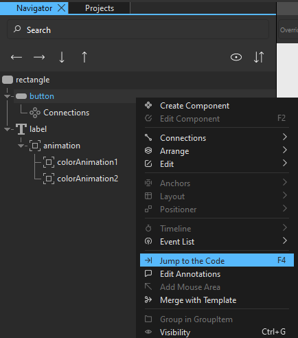
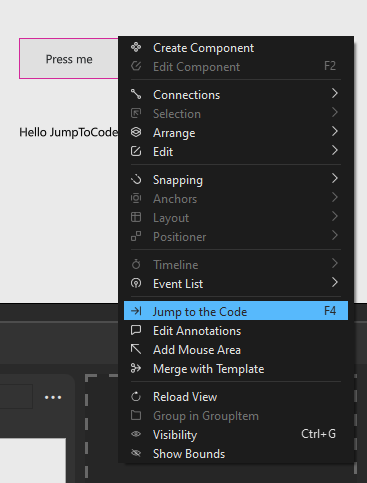
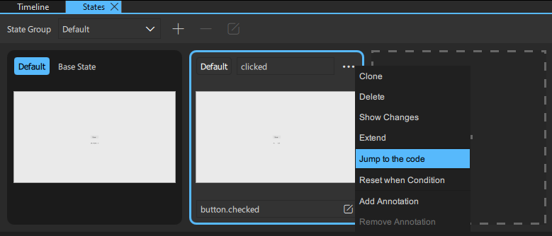
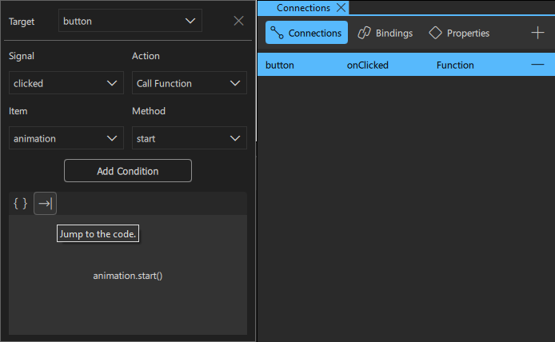

Jump to the Code
Jump to the code is a feature that gives you instant access to a particular part of the code. It takes you to the Code view location of a particular component, State, or Connection.
You can jump to the code from:
- Navigator view
- 2D view
- States view
- Connections view
Jump to the Code from the Navigator View
- Right-click on a component in the Navigator view.
- Select Jump to the Code.

Jump to the Code from the 2D View
- Right-click on a component in the 2D view.
- Select Jump to the Code.

Note: Alternatively, you can select the component in the Navigator view or in the 2D view and press F4. That takes you to the code location in the Code view.
Jump to the Code from the States View
- Locate the state you want to check in the States view.
- Select to open additional options.
- Select Jump to the Code.

Jump to the Code from the Connections View
- Select a connection in the Connections view.
- Select to jump to the code segment related to the connection.
